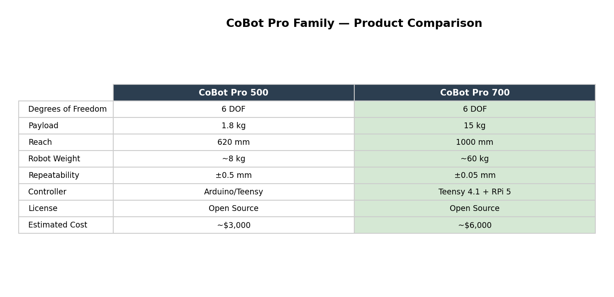
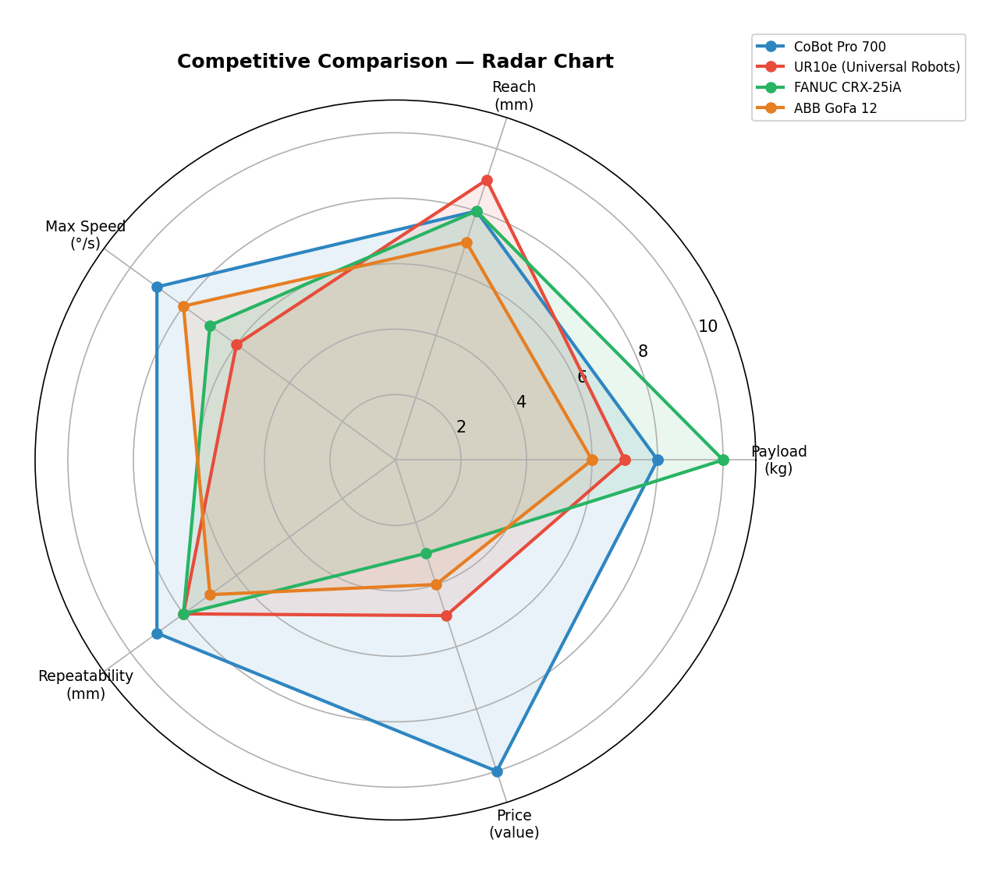
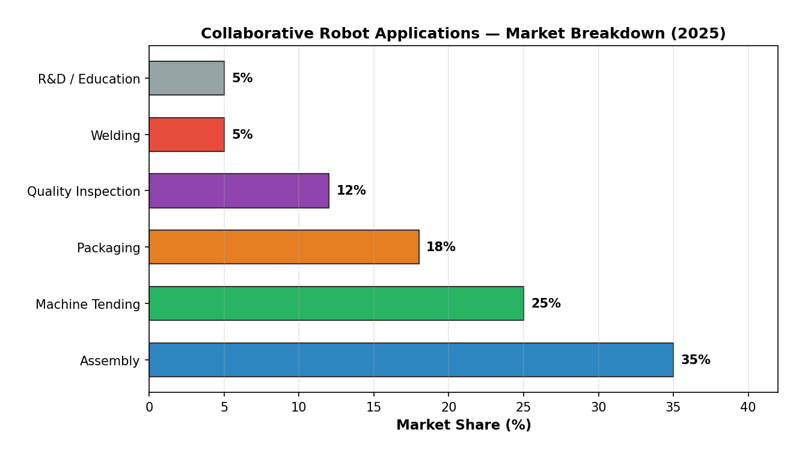

Contoso Robotics is proud to present the CoBot Pro family of collaborative robots — the most advanced, safety-certified cobots engineered for modern manufacturing. Whether you are automating precision assembly, machine tending, quality inspection, or palletizing, the CoBot Pro 500 and CoBot Pro 700 deliver unmatched performance, flexibility, and ease of use. This brochure provides a comprehensive overview of both models, their key specifications, and the industries they serve.

The CoBot Pro product line consists of two models designed to address a broad spectrum of collaborative automation needs:
Both models share a common software platform — CoBot OS v4.2 — and are programmed through the intuitive CoBot Studio IDE, enabling rapid deployment and redeployment across tasks with minimal downtime.
The CoBot Pro series achieves ±0.02 mm repeatability across its entire workspace, powered by high-resolution absolute encoders on all six joints. This level of precision enables applications such as PCB component insertion, micro-screw driving, and surgical instrument assembly.
Every CoBot Pro ships with the Safety Controller SC-100, a dual-channel, SIL-3 rated safety system. The SC-100 continuously monitors joint torques, TCP speed, and workspace boundaries, enabling true fenceless operation in compliance with ISO 10218-1, ISO 10218-2, and ISO/TS 15066. Force-limiting thresholds are configurable from 50 N to 250 N for different body regions.
The optional CoBot Vision Module VM-200 adds AI-powered visual perception to any CoBot Pro arm. With a 5-megapixel global shutter sensor and onboard neural processing, the VM-200 performs part detection, dimensional measurement, barcode reading, and surface defect inspection at up to 30 frames per second. For a full technical breakdown, see the CoBot Vision Module VM-200 — Technical Brief from Contoso Robotics Marketing.
CoBot Studio IDE offers drag-and-drop programming, hand-guided teaching, and a Python/C++ scripting interface. New operators can program basic pick-and-place routines in under 30 minutes. Advanced users can leverage the ROS 2 interface for integration with external planning and perception stacks.

| Specification | CoBot Pro 500 | CoBot Pro 700 |
|---|---|---|
| Degrees of Freedom | 6 | 6 |
| Reach | 500 mm | 700 mm |
| Payload Capacity | 5 kg | 10 kg |
| Repeatability | ±0.02 mm | ±0.02 mm |
| Maximum TCP Speed | 1.5 m/s | 2.0 m/s |
| Robot Weight | 28 kg | 35 kg |
| Power Consumption | 350 W (typical) | 500 W (typical) |
| Communication | EtherCAT, Ethernet, Modbus TCP, ROS 2 | EtherCAT, Ethernet, Modbus TCP, ROS 2 |
| IP Rating | IP54 | IP54 |
| Operating Temperature | 5°C to 45°C | 5°C to 45°C |
| Safety Certifications | ISO 10218-1/2, ISO/TS 15066, CE, UL | ISO 10218-1/2, ISO/TS 15066, CE, UL |
| Safety Controller | SC-100 (SIL-3 / PLe Cat 4) | SC-100 (SIL-3 / PLe Cat 4) |

CoBot Pro 700 units handle screw driving, sealant dispensing, and parts inspection on final assembly lines. The 10 kg payload enables handling of heavy sub-assemblies like brake calipers and battery modules.
The CoBot Pro 500's compact footprint and ±0.02 mm repeatability make it ideal for PCB testing, connector insertion, and conformal coating in cleanroom environments.
IP54-rated enclosures and food-grade lubricant options allow CoBot Pro robots to work in packaging, pick-and-place sortation, and end-of-line palletizing operations in regulated food processing facilities.
CoBot Pro 500 models support laboratory automation tasks including pipetting, sample sorting, and tray loading for high-throughput screening. Cleanroom-compatible variants are available for ISO Class 5 environments.
The CoBot Pro 700 pairs with conveyor systems and AMRs (Autonomous Mobile Robots) to automate parcel sorting, bin picking, and order fulfillment, with throughput gains of 30–50% over manual operations.
Ready to deploy your first CoBot Pro? Start with the CoBot Pro Quick Start Guide in the Contoso Robotics Support documentation for step-by-step unboxing, mounting, and first-program instructions. For a deeper understanding of the underlying control architecture, EtherCAT bus topology, and real-time loop design, refer to the System Architecture Overview in the Engineering documentation.
Contact your Contoso Robotics sales representative or visit www.contoso-robotics.com/cobot-pro to request a demo or configure a system for your application.
Document version 2.1 | Last updated: 2025-01-20 | Contoso Robotics Marketing